The most common hypohalous acids, HOCl and HOBr, are relatively weak acids (pKa = 7.5 & 8.6 respectively) that are only stable in solution. These acids and their ester derivatives are formed reversibly when the corresponding halogens are dissolved in hydroxylic solvents.
For a solution of chlorine in water the equilibrium constant is only about 5 * 10-4. The concentration of HOCl may be increased by adding silver oxide ( Ag(+) reduces the chloride ion concentration and the oxide increases the pH ), but this is not a common procedure. As a rule, these reagents are prepared by hydrolysis of N-chloro and N-bromo precursors immediately prior to their use.
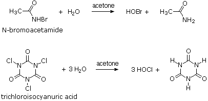
This page is the property of The Edvibe Team. Comments, questions and errors should be sent to contact@edvibe.co.ke. These pages are provided to the IOCD to assist in capacity building in chemical education. 05/05/2013
When a chemical reaction takes place, the atoms and associated electrons of the reacting molecular species reorganize to form new product molecules and ions. The overall structural changes are normally evident once the products have been identified, but the manner in which these changes take place is less obvious. In order to represent and keep track of the electron reorganization involved in a reaction, chemists find it useful to depict the way in which key electron pairs (or single electrons) move to accommodate the breaking of existing bonds and the making of new bonds. Curved arrow symbols are a convenient tool for this purpose, and a complete representation of all the electron shifts in a reaction is called its mechanism. As a rule, only the valence shell electrons of atoms are involved in a chemical reaction, and only a few of these electrons actually change their location. Electron pair shifts are the most common events in most mechanisms, and are the subject of this discussion. Single (or odd) electron shift mechanisms are described in the Free Radical section of this text. Valence shell electron pairs will either be bonding or non-bonding. The placement of curved arrows for these pairs will be slightly different. This is illustrated by the two equations in the following diagram. Non bonding electron pairs usually participate in a reaction by forming a covalent bond to another atom. Bonding electron pairs may shift to form a new covalent bond, or to become a non-bonding electron pair. By clicking on this diagram, these changes will be identified by color coding.
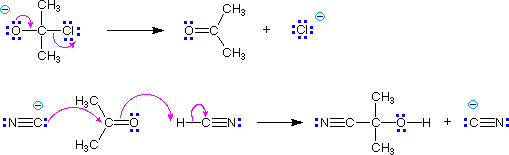
In these examples the foot of the curved arrow (the end opposite to the head) is placed at the initial location of an electron pair that is going to shift its position. If this is a bonding electron pair that should be the center of the bond. The head of the arrow then points to the pair's final location – either an atom if it becomes non-bonding, or the space where a new bond will be formed. If the new bond will be a π-bond, this should be the center of the already existing σ-bond. If the new bond will be a σ-bond, the arrow should clearly identify the atom that will share the electron pair.
In cases where full or partial charges are present, the direction in which arrows are drawn should be evident. Remember, a curved arrow shows the movement of an electron pair in the direction to which the head points, and nucleophiles generally bond to electrophiles. The previous two equations are typical examples. In other cases, especially when a cycle of arrows is drawn, the direction may not be clear and may not even matter. Two examples of such cyclic arrays are shown in the following equations. The first describes the resonance π-electron delocalization in benzene. The second is a Diels-Alder cycloaddition reaction between symmetrically substituted reactants.
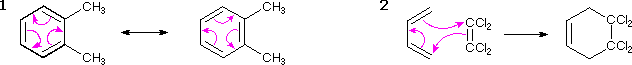
In reactions where the distribution of electrons is not symmetrical, the direction in which curved arrows are drawn may be significant. One such case is the thermal decarboxylation of acetoacetic acid shown below. A concerted mechanism consisting of cyclic shifts of electron pairs may be drawn, and two such examples are shown below. Although both mechanisms lead to the products in the light blue box, the mechanism on the left (green arrow) is a more plausible representation than that on the right, because it reflects the acidic character of the carboxylic acid and the basic character of a carbonyl oxygen.
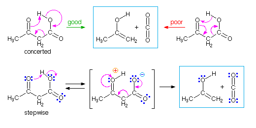
This distinction is clearly seen in the two-step mechanism written in the second row of the diagram. The initial proton transfer proceeds in the expected fashion, and the remaining electron shifts are the same as those in the green arrow concerted mechanism. There is no evidence supporting a two-step pathway for this decarboxylation, but it is possible that the proton transfer stage leads the concerted cyclic sequence.
The preceding example is nevertheless a warning that many reactions do take place in a stepwise fashion, and the mechanisms we write must recognize such cases. The conversion of an ester to an amide by reaction with ammonia, as shown below, is such an example. At first glance this seems to be a substitution reaction, and it would be possible to draw curved arrows for a concerted mechanism, as depicted in the box on the far right. In fact, this reaction, and other acyl transfer reactions, take place by an addition-elimination sequence, as drawn in the boxed space beneath the overall reaction equation. The concerted mechanism on the right is therefore an erroneous conjecture. Thus we have a useful warning that "arrow pushing" does not always lead to plausible interpretations of reaction mechanisms. Experimental support for any mechanism is highly desirable if not essential.
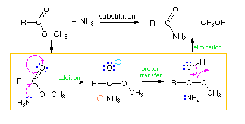
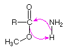
The relative acidities of different acids are commonly measured and cited as pKa values, relative to a standard solvent base, often water. These numbers reflect the equilibrium acidities of the acids. An astounding range of acidities is displayed by even rather simple compounds. The table on the right lists some elemental hydrides from groups 4 through 7 of the periodic table. The pKa's determined (or in some cases estimated) for these compounds are shown beneath the formulas. Approximate values for higher members of group 4 and 5 hydrides (e.g. silane and phosphine) have not been reported. Note that these logarithmic numbers encompass nearly sixty powers of ten. This is a greater span than that encompassed by distance measurements starting from the radius of a hydrogen atom and extending to the diameter of the known universe.
Why do these relatively simple compounds differ in acid strength so markedly? Two factors may be discerned: • First, the compounds in the top row clearly show the importance of electronegativity. All the heavier elements have greater electronegativities than hydrogen, with carbon being the least different. The ionic character of these covalent bonds is such that hydrogen carries a partial positive charge, and the heavier atom a corresponding negative charge. The greatest charge separation is in H-F, where the electronegativity difference is nearly 2. Removal of a proton is facilitated by this charge separation. The covalent bond energies do not correlate inversely with acid strength, as one might have expected, since the two strongest acids have the strongest bonds (H–O 111 kcal/mol & H–F 135 kcal/mol). Finally, the heavy atoms in the top row have similar sizes, the covalent radii being 0.75 ±0.02 Å. The importance of this fact will become apparent in the next discussion. • Second, the compounds in the columns representing periodic groups 6 and 7 show an increase in acidity moving from the top to the bottom. This is opposite to the electronegativity change, and is best attributed to an increase in heavy atom size. When an acid transfers a proton to a base, the remaining residue (the conjugate base) must carry a negative charge. Ignoring solvent stabilization (solvation), the stability of ions is a function of charge density. A small ion has a higher charge density than a larger ion of the same charge, making the smaller ion less stable. From the covalent radius of oxygen compared with sulfur, and fluorine compared with chlorine, it can be estimated that the charge density on the larger atom is half that of the smaller. The resulting stabilization of the conjugate base more than compensates for the decrease in electronegativity in moving down the column; so H2S is a stronger acid than H2O, and HCl a stronger acid than HF. Since sulfur and chlorine are nearly the same size ( covalent radii being 1.02 ±0.02 Å ), electronegativity explains the difference in acidity between H2S and HCl.
If the heavy atom of an acid carries a formal charge, its acidity will be changed substantially. This is demonstrated by the examples on the right. Ammonium and hydronium ions carry a positive charge, and the acidity of the species is increased by over fifteen powers of ten relative to uncharged ammonia and water. By contrast, hydrogen sulfide and hydrogen selenide are dibasic acids (they have two acidic protons). Once the first proton has been lost, the acidity of the negatively charged conjugate base is reduced over a million fold. This is true for most other dibasic acids such as H2SO4 and H2CO3.
Accurate acidity measurements in the pKa range from 1 to 14 can usually be made in water solution. However, acids stronger than the hydronium ion (H3O(+)) and bases stronger than hydroxide ion (OH(–)) react immediately with this solvent, and the resulting "leveling effect" prevents direct measurement of their pKa's. One way of circumventing this difficulty is to examine the acidity of very strong ( pKa < 0) and very weak ( pKa > 15) acids in different (non-aqueous) solvents, and to extrapolate these measurements to water. For example, solvents such as acetic acid, acetonitrile and nitromethane are often used for studying very strong acids. Very weakly acidic solvents such as DMSO, acetonitrile, toluene, amines and ammonia are used to study the acidities of very weak acids. The errors introduced in extreme cases, such as methane, are often large; but the overall range of acid strengths observed in this manner cannot be questioned.
As noted earlier, a Brønsted acid base equilibrium involves a reversible proton transfer between a pair of acids and a pair of bases (referred to as conjugate pairs). The dissociation of a group of acids in a given solvent may be used as a measure of acid strength, and in such cases the solvent serves as a common reference base. The determination of Ka and pKa values for any solvent system may be carried out in the same way as in water; however, the acidities obtained for a group of acids measured in different solvents will generally be different, both in the numerical value for each, and sometimes in relative order.
There are several factors which influence acidity measurements made in water and other solvents. These are:
1. Ionization of an acid produces ions. Solvents having large dielectric constants favor charge formation and separation. 2. The conjugate acid from the solvent is a cation that is stabilized by association with other solvent molecules, a phenomenon called solvation. 3. The conjugate base of the acid is an anion, that in most cases is also stabilized by solvation.
As examples, consider the following data obtained for six strong acids in three common solvents.
All three solvents have fairly high dielectric constants, but water (ε = 80) is significantly greater than DMSO (ε = 46.7) or acetonitrile (ε = 37.5). The greater acidity ( lower pKa ) of the last four compounds in water might be attributed to the dielectric difference; however, the superior anion solvation provided by water is considered to be the major factor. Both DMSO and acetonitrile are poor anion solvation solvents, consequently the ionization equilibrium shown above will be shifted to the left.
It is informative to focus first on the pKa differences between water and DMSO. We do this because water and DMSO have similar basicities, so stabilization of the solvent conjugate acid species should not differ substantially. HBr and HCl display pKas in DMSO that are roughly 9 to 10 powers of ten more positive than in water, and the weaker second period acid HF shows an even greater change (pKa = 3.17 in water & 15 in DMSO). The conjugate bases of these acids are all single atom anions. Because the negative charge is localized, anion stabilization by solvation is probably the most important factor in establishing the position of these equilibria. In contrast, the conjugate bases from sulfuric acid and trifluoroacetic acid are internally stabilized by charge delocalization over two or three oxygen atoms. The importance of solvation is therefore less important, and the shift in acidity in DMSO is reduced to 4 powers of ten. When acetonitrile is the solvent, the measured pKas of these acids show a further increase, and even the strongest acids are not completely dissociated. This change may be attributed in large part to diminished solvation of the solvent conjugate acid, which is the chief cation species in dilute solutions. Since both the cationic and anionic species from acidic ionization are poorly stabilized by solvation, the dissociation equilibrium lies far to the left (no ionization).
Most organic compounds are much weaker acids than those listed above. It is therefore of interest to determine the changes in acidity that take place when such compounds are examined in the same three solvents. The first four compounds in the following table (shaded light green) are weak acids having conjugate bases in which the charge is localized on a single atom ( O, C & S ). Changing the solvent from water to DMSO decreases the acidity by 10 to 12 powers of ten for second period atoms ( C & O ), and by 6.5 for the third period sulfhydryl acid. Just as in the more acidic cases treated above, solvation of the conjugate base anions is an important stabilizing factor in water, although the lower charge density on sulfur reduces its significance. The further increase in pKa that occurs in acetonitrile solutions, relative to DMSO, is fairly uniform (10 to12 units) and a bit larger than the shift found for the strong acids. The last four compounds (shaded blue) have conjugate bases stabilized by charge delocalization. Here, the decrease in acidity going from water to DMSO is lowered to 7 to 8 powers of ten for oxygen and is less than 4 for sulfur. As noted previously, charge delocalization within an anion reduces the importance of solvation stabilization. The increase in pKa found for acetonitrile solutions remains roughly the same, and may be attributed to poor solvation of the nitrile conjugate acid, as noted above.
With the exception of the acetylene derivative, the previous compounds are all heteroatom acids. Similar measurements for a group of activated carbon acids show agreement with the previous analysis, and illustrate the manner in which anionic charge delocalization reduces the pKa difference between water and DMSO measurements. Note the near identity of the second and third examples in the following table. As expected, the pKa increase in going to acetonitrile from DMSO remains roughly constant (ca. 11).
The most common notation for reporting relative base strengths is in terms of the pKa's of the corresponding conjugate acids ( these conjugate acids are often called "onium" cations ). The following equation shows the equilibrium involved in this relationship. Note that strong bases will have weakly acidic conjugate acids, so the pKa is proportional to the base strength of the base.
The previously defined factors that influenced acidity may now be reexamined for this new equilibrium.
1. Ions are present on both sides of the equation. Consequently, differences in the solvent dielectric constant should be a relatively unimportant factor. 2. The base and solvent conjugate acid cations are both stabilized by solvation. This will be a critical factor, and is related to solvent basicity. 3. There are no anions in the above equation; however charge neutralization requires a counter anion. Since the same anion will be present on both sides of the equation, its influence on this equilibrium will be canceled.
The following table gives pKa values for some commonly used nitrogen bases, some structures for which are shown to its right. In the triethylamine and DABCO examples at the top of the table, the cationic charge is relatively localized on a single nitrogen atom. The charge in lutidine may be delocalized onto ring carbons at the cost of aromatic stabilization. The last three examples are compounds in which the charge is delocalized by resonance (protonation occurs at the light blue nitrogen) or internal hydrogen bonding (the proton sponge). In contrast to the earlier examples of acid pKas, the values for these ammonium cations are nearly identical in water and DMSO solvents. Indeed, the fact that most of the DMSO pKas are a bit lower than their water counterparts suggests that DMSO is slightly more basic than water. In acetonitrile all the pKa values are about 10 units higher than the DMSO values.
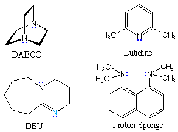
The influence of solvent on acidity and basicity noted above may cause unexpected changes in simple acid-base equilibria. If acetic acid and triethyl amine are mixed together in water, a rapid proton transfer takes place to give nearly quantitative formation of triethyl ammonium acetate. The conjugate acids differ in strength by 106 and the weakest is favored at equilibrium. When the same two compounds are combined in DMSO solution there is negligible proton transfer, since acetic acid is now over 103 times weaker an acid than the triethyl ammonium cation.
The strongest bases available to organic chemists are alkali metal alkoxide salts, such as potassium tert.-butoxide, alkali metal alkyls, such as n-butyl lithium, and amide salts of alkali metals, such as LDA. These powerful bases are all potential nucleophiles (some more than others) and have partially ionic bonds to the metal. Recently, a new class of non-metallic, poorly nucleophilic, neutral bases have been prepared and studied. Some examples are shown in the following diagram. The basic site in the Verkade base is the phosphorous atom, the conjugate acid being stabilized by transannular bonding to nitrogen. The strength of these bases may be modified by substituents on the flanking nitrogens. The Schwesinger phosphazene bases increase their strength as additional phosphazene units are added in conjugation with the basic site (the light blue nitrogen atom). All the pKas for these bases are measured in acetonitrile.
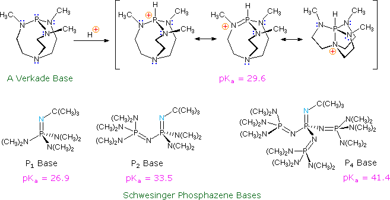
Hybridization has a strong influence on acidity, as shown by the three carbon acids on the upper left below. The greater the s-character of the orbital holding the electron pair of the conjugate base, the greater will be the stability of the base. This corresponds to the lower energy of an s-orbital compared with p-orbitals in the same valence shell. It also corresponds to the increased electronegativity or inductive electron withdrawal that is found for different hybridization states of a given atom, as depicted in the graph on the right. The difference in acidity of 2-butynoic acid and butanoic acid, shown in the shaded box at lower left, provides a further illustration of this inductive effect. Carbocation stability is also influenced by hybridization, but in the opposite direction (sp3 > sp2 > sp).
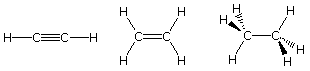
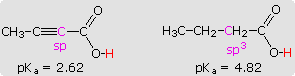
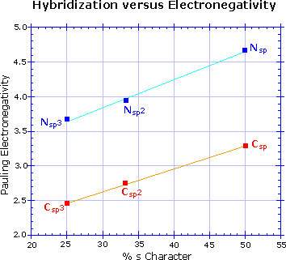
Many carbon acids have enhanced acidity because of a neighboring functional group. The acidity of alpha hydrogens in aldehydes, ketones and esters is well documented, and is the source of many important synthetic procedures. The following equation illustrates the general enolate anion transformation, with the acidic alpha-hydrogen colored red. The resulting ambident anion is stabilized by charge delocalization, and may react with electrophiles at both carbon and oxygen. Stereoelectronic factors govern the enolization reaction, as illustrated by clicking on the diagram below. The bond from the alpha carbon to the acidic alpha-hydrogen must be oriented 90º to the plane of the carbonyl group, or parallel to the pi-electron system (colored magenta here). The ideal overlap occurs with a 0º dihedral angle between this bond and the pi-orbital, as shown.
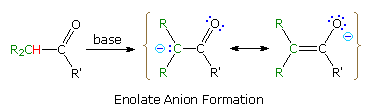
By clicking on the diagram a second time, the importance of this stereoelectronic requirement will be demonstrated. An increase in the acidity of carbon acids activated by two carbonyl groups is well known, and is illustrated by the two beta-dicarbonyl compounds on the left side of the diagram. In such cases the acidic C-H unit may be oriented perpendicular to both carbonyl groups, and the resulting planar anion is stabilized by additional charge delocalization (over both oxygens and the central carbon). In the case of the bicyclic diketone on the right, the C-H bond nearly eclipses the two carbonyl C-O bonds, resulting in a dihedral angle with the pi-electron systems of roughly 90º. Consequently, the acidity of this hydrogen is similar to that of the hydrogens of an alkane or cycloalkane. It should also be apparent that if an enolate anion were to be formed to the bridgehead carbon, the double bond would be prohibited by Bredt's rule.
The most common acid-base terminology, pKa , reflects an equilibrium acidity, extrapolated or normalized to water. In the following equation a base, B:(–) M(+), abstracts a proton from an acid, H-A, to form a conjugate acid - base pair (A:(–) M(+) & B-H). The rate of the forward proton abstraction is k f , and the reverse rate of proton transfer is k r. This kind of equilibrium is usually characterized by an equilibrium constant, Keq, which is the ratio of the rate constants (k f / k r). If H-A is a weaker acid than H-B the equilibrium will lie to the left, and Keq will be smaller than 1.
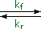
In cases where H-A is very much weaker than H-B, Keq may be too small to measure, but it may be possible to determine the rate of the forward proton abstraction under certain circumstances. If an isotopically labeled conjugate acid of the base is used as a solvent for the reaction (B-D in the following equations), then any proton abstraction that occurs will be marked by conversion of H-A to D-A. The green shaded top equation shows the initial loss of the proton, and the second equation describes the rapid deuteration of the intermediate conjugate base, A:(–). As these reactions proceed, the H-A reactant will be increasingly labeled as D-A, and the rate of isotope exchange will indicate the kinetic acidity of H-A. It is assumed that kinetic acidity is roughly proportional to equilibrium (thermodynamic) acidity, but this is not always true.
The following diagram provides an instructive example of these principles. The first equation, in the yellow shaded box, provides important information about heavy water (deuterium oxide), which will be used as a solvent for our experiment. Heavy water is similar to water in many respects, but is 10% more dense and a ten-fold weaker acid. A 1 molar concentration of sodium deuteroxide will serve as the base, and an equimolar quantity of 3,3-dimethyl-1-butyne will serve as the weak acid. The most acidic hydrogen in this hydrocarbon (colored red) is at C-1. In practice, we would need to use a co-solvent to completely dissolve the hydrocarbon in the heavy water, but this has been omitted in order to simplify the discussion. The second equation describes the essential changes expected on combining these reactants in the heavy water solvent. Since the terminal alkyne is a much weaker acid than heavy water, acid-base equilibria do not favor its conjugate base. Nevertheless, if the acetylide anion is formed, even in low concentration, it should react quickly by abstracting a deuterium from a neighboring deuterium oxide molecule. The result would be an observable exchange of deuterium for hydrogen, testifying that an acid-base reaction has occurred.
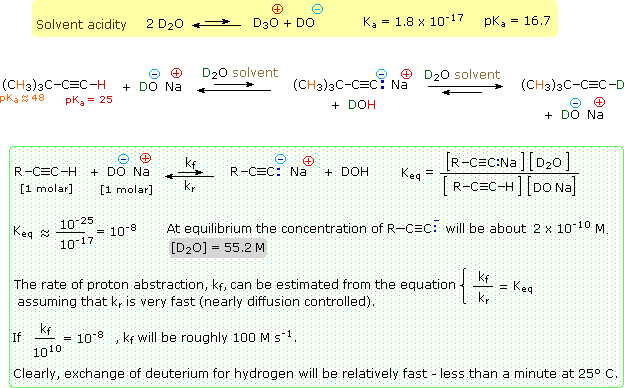
The green shaded box contains equations that help us to interpret the experimental results. In order to evaluate the equilibrium acidity of the substrate, we would need to measure the equilibrium constant Keq for the initial acid-base equilibrium, shown at the top of the shaded box. Since we know the Ka 's of 3,3-dimethyl-1-butyne and heavy water, we can estimate Keq by dividing the former (10 -25) by the latter (10 -17). This calculation reveals a Keq that would be difficult to measure directly because of its small magnitude (10 -8). Indeed, the equilibrium concentration of acetylide anion is estimated to be only 2*!0 -10 M. If we examine this experiment from the viewpoint of kinetics, easily observable evidence of terminal alkyne acidity is obtained. The last three rows of equations in the green shaded box make this clear. Since Keq is the ratio of forward and reverse rate constants, it is possible to draw conclusions about the rate of terminal proton abstraction from the alkyne. This leads to the conclusion that reasonably rapid hydrogen-deuterium exchange will occur, even though the acetylide anion is never present in concentrations exceeding 10 -9 M.
This example also demonstrates the limits of the isotope exchange approach. The 3,3-dimethyl-1-butyne substrate also has nine other hydrogen atoms (colored orange) that do not exchange with deuterium under these conditions. We know that these hydrogens are much less acidic (Ka ca. 10 -48), and it is interesting to consider their potential participation in acid-base reactions by the previous analysis. The estimated Keq for such carbanion formation is ca.10 -30, taking into account the nine-fold increase in concentration. This implies a concentration of one carbanion in every 109 liters of solution. The kinetic analysis is equally discouraging. The forward rate constant is estimated to be 10 -20 Ms-1. The time required to exchange half these hydrogens for deuterium would therefore be about 1010 centuries! In order to study the kinetic acidity of extremely weak acids (pKa's = 30 to 50) it is necessary to use much stronger bases, which of course have much weaker conjugate acids. Amide anions (pKa's = 26 to 36) have been used for this purpose.
By comparing the rates of hydrogen exchange for different compounds under identical conditions, tables of relative kinetic acidities may be assembled. An interesting example of such a study has been reported for a group of nitroalkanes having acidic α-hydrogens. Compared with the terminal alkyne discussed above, such nitroalkanes are relatively strong C-H acids. Removal of an α-hydrogen by a base generates a conjugate base called an aci-anion, as shown here.
Since the nitroalkanes used in this study are stronger acids than water, the kinetic exchange experiments must be conducted under milder conditions than those used for the terminal alkyne. This is achieved by using smaller base concentrations and lowering the temperature of the exchange reaction. Accurate pKa's of 2-nitropropane, nitroethane and nitromethane may be measured directly in aqueous solution. These kinetic and equilibrium acidities are listed in the table on the right. Note that for these three compounds, kinetic acidity changes in an opposite fashion to equilibrium acidity. The kinetic order seems to reflect steric hindrance and carbanion stability; whereas, the equilibria favor increased substitution of the aci-anion double bond.
Base-catalyzed isotope exchange studies of compounds incorporating more than one set of acidic hydrogens provides additional insight concerning the creation and use of nucleophilic conjugate bases. Ketones provide many examples of regioisomeric enolate base formation, and the following diagram shows two such cases. As noted in the nitroalkane study, hydrogens on an α-methyl group are exchanged more rapidly than those on more substituted α-carbon atoms. The equations in the diagram show only the initial product from a single exchange. These products have additional α-hydrogens which are also exchanged by subsequent reactions of this kind, so that complete replacement of all α-hydrogens by deuterium takes place in a short time. The relative stability of the resulting enolates increases with substitution of the enolate double bond. Equations showing the equilibrium concentrations of these isomeric enolates will be displayed by clicking the Toggle Equations button. In order to determine enolate anion equilibria for these ketones, the bulky strong base sodium hexamethyldisilazide (pKa = 26) was used.
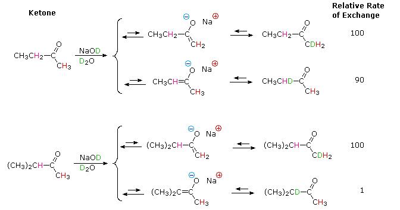
By clicking the Toggle Equations button a second time, the relative rates of α-hydrogen exchange for some substituted cyclohexanones will be displayed above. Once again, less substituted α-carbons exchange more rapidly, but more highly substituted enolates are found to predominate under equilibrium conditions. A third click of the Toggle Equations button will display an energy profile for the 2-methylcyclohexanone case, which should clarify the distinction between kinetic and equilibrium acidity. Two other examples are also shown. These displays may be cycled repeatedly.
Most carbon acids yield conjugate bases that are stabilized by charge delocalization onto neighboring heteroatoms. This resonance stabilization requires significant structural reorganization of the initial compound, which in turn imposes an energy barrier that retards the rate of proton abstraction. For example, the alpha-carbon of a ketone or ester must undergo rehybridization as the enolate anion is formed. The stereoelectronic demands of this change were described above, and it is not surprising that enolate anion formation is much slower than equivalent proton transfers between alcohols and other hydroxylic compounds. Deprotonation rates of phenol and nitromethane, compounds with nearly identical pKa's (10.0), provide an instructive example of this structural reorganization factor. The acidic proton in phenol is bound to oxygen, so deprotonation requires little structure change and is very fast. Nitromethane is a carbon acid. Deprotonation to an aci-anion involves considerable structural change, and is a million times slower than phenolate formation. These structural changes are illustrated in the following diagram.
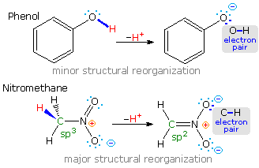
Note that the O-H electron pair in phenol remains largely on oxygen in the corresponding conjugate base, whereas the C-H electron pair in nitromethane is predominantly shifted to oxygen in its conjugate base (colored blue).
The trends outlined here are a bit oversimplified, since solvent and cation influences have been ignored. For a discussion of these factors, and practical applications of enolate anion intermediates in synthesis Click Here.
The carboxylic acids are a large and structurally diverse class of compounds. Since most are at least partially soluble in water and have pKa's in the 2 to 5 region, the influence of functional substituents and structural features on aqueous acidity have been studied extensively. Formic acid, HCO2H, is the simplest member of this class, and will serve as a useful reference point, pKa=3.75. Although the greater acidity of formic acid compared with methanol has been attributed to resonance stabilization of the formate anion, the different solvation demands of the respective conjugate anions result in an entropy difference that also favors the formate base. Both factors are depicted in the following illustration.. Resonance delocalization of the negative charge in the formate anion produces a large enthalpic stabilization shown by the magenta arrow. In water solution both methanol and formic acid are incorporated into the dynamic hydrogen bonded structure of liquid water. On ionization, each of these solutes produces a hydrated proton (hydronium ion) and a negatively charged conjugate base. The hydronium ion is common to both cases and can be ignored. The negative charge in the methoxide anion is concentrated on a single oxygen atom and demands strong solvation by water molecules, indicated by the aqua-colored dots. This solvation forces significant structural organization on many water molecules at the cost of decreased entropy. The formate anion also carries a single negative charge, but it is distributed over two oxygen atoms, so the charge density at either site is halved, compared with methoxide. This lower charge density demands much less solvation by water, resulting in a smaller entropy cost.
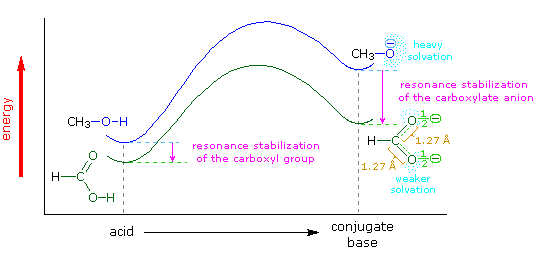
The importance of solvation and the accompanying entropy changes to any discussion of acidity may be seen by comparing the pKa's of methanol and formic acid in water and DMSO, a solvent that poorly solvates anions. In water the pKa of methanol is 15.5, nearly 12 powers of ten less acidic than formic acid (3.75). In DMSO the pKa's of methanol and formic acid are roughly 29 and 13 respectively, representing a very large decrease in Brønsted acid strength for both compounds (more than ten powers of ten). Furthermore, the difference in acid strength between methanol and formic acid in DMSO is magnified about ten thousand times, even though the enthalpic resonance stabilization presumably remains constant. A more extensive discussion of solvent effects on acidity was presented earlier. When comparing the acidities of different acids, care must be taken to use pKa's measured in the same solvent. In this discussion all the pKa's were taken in or extrapolated to water at 25 ºC. Measurements in mixed aqueous solvents, using water-soluble organic co-solvents such as ethanol, acetonitrile, dioxane, DMSO and acetone, generally give significantly larger pKa's.
In all other carboxylic acids an organic substituent replaces the hydrogen of formic acid, and it is instructive to analyze the change in acid strength caused by this change. To begin with, we must recognize that the carbonyl moiety of the carboxyl group is electrophilic and withdraws electrons from substituents. The deactivating nature of the carboxyl group on electrophilic substitution of benzoic acid is one example of this property. Resonance structures, such as A, B & C in the following diagram, are often drawn to describe this electrophilic character. The inductive effect of substituent Z in this diagram may enhance or diminish this character, depending on its overall electronegativity. Inductive electron withdrawal will increase the electrophilic character and the acidity of the carboxyl group, as shown in the green shaded box on the right. Resonance electron donation, either by p-π or π-π interaction, would act to stabilize the carboxylic acid, reducing its electrophilicity and acidity. These two effects often act in opposition, and in the case of carbonic acid ( H2CO3 ) electron donation overcomes inductive withdrawal, resulting in a pKa1=6.63.
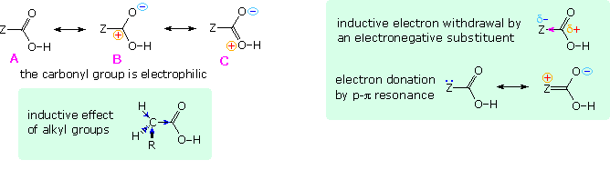
Saturated aliphatic acids are generally ten times weaker than formic acid, which may seem surprising since carbon has a higher Pauling electronegativity than hydrogen (2.55 versus 2.20). However, we must recognize that a carbon atom is larger and more polarizable than hydrogen, allowing it to shift electrons toward the more electronegative carbonyl carbon of the carboxyl group. Also, hydrogen and alkyl substituents on the α-carbon assist in this inductive electron shift, as shown in the green box on the left. This analysis is supported by the activating influence of alkyl substituents in electrophilic aromatic substitution, the Markovnikov rule, and the greater reactivity of aldehydes with nucleophiles compared with equivalent methyl ketones. The four carboxylic acids in the first row of the following table illustrate the electron donating quality of alkyl groups. As the number of carbon atoms in the group increases from one to five, the inductive electron donation also increases. The compounds in the next three rows of the table demonstrate that electronegative substituents on an alkyl group can shift its inductive effect from donating to withdrawing (relative to hydrogen). Thus, all the haloacetic acids are more acidic than formic acid, with fluoroacetic acid being the most acidic. Additional halogen substituents have an additive influence, and moving the substituent from the α to a β-carbon reduces its influence on the acidity. Note that a hydroxyl substituent has a much weaker effect than any of the halogens, despite the higher electronegativity of oxygen (3.44 compared with 3.16 for chlorine).
The aliphatic acids discussed above do not provide any insight into p-π or π-π conjugation effects, since the sp3-hybridized α-carbon insulates the carboxyl group from such interactions. Conjugation may be studied by using α,β-unsaturated and aromatic carboxylic acids. The two parent compounds of these classes, acrylic acid (CH2=CHCO2H) and benzoic acid (C6H5CO2H), are both slightly stronger than acetic acid and have similar pKa's of 4.26 and 4.20 respectively. Since their influence is probably a combination of inductive and resonance effects, it would be helpful to evaluate one of these alone. The following four compounds represent acetic acid derivatives in which a methyl hydrogen has been replaced with a methyl group, a vinyl group, a phenyl group and a chlorine atom respectively. In each compound a methylene group insulates the substituent from the carboxyl group, prohibiting conjugative interactions. As noted above, the methyl substituent is weakly electron donating and the chlorine exerts a strong electron withdrawing influence. Comparatively, the vinyl and phenyl groups have an electron withdrawing inductive effect roughly 25% that of chlorine. From this we may conclude that resonance electron donation to the carboxyl function in acrylic acid and benzoic acid substantially dilutes the inductive effect of the sp2 substituent groups.
The increased electronegativity of sp2 and sp hybridized carbon compared with sp3 carbon was noted earlier. This increase is particularly dramatic for triply bonded substituents, as seen in the acidity of 2-propynoic acid, HC≡CCO2H, and 3-butynoic acid, HC≡CCH2CO2H, having respective pKa's of 1.90 and 3.30. Conjugative electron donation in 2-propynoic acid is very small, compared with acrylic acid, reflecting the poor electron donating character of the triple bond. Another aspect of conjugation concerns the ability of a double bond, triple bond or aromatic ring to transmit the influence of a remote substituent to the carboxyl group. The compounds in the following table provide information bearing on this issue. The top row consists of β-substituted acrylic acid derivatives. Methyl and phenyl substituents exert a weakening effect; whereas chlorine strengthens the acid. Comparing these relationships with similar substituent effects in equivalent saturated acids (previous table) leads to some interesting differences. • A β-chlorine substituent exerts the same acidity strengthening effect regardless of unsaturation in the connecting chain. • A β-methyl group decreases the acidity of the unsaturated acid ten fold over that of the saturated analog. • A β-phenyl group increases the acidity of the saturated acid, but decreases that of the unsaturated acid by roughly the same degree. These observations may be interpreted in several ways. First, the inductive electron withdrawal by chlorine through a C–C sigma-bond is about the same as through a pi-bond. Second, The inductive electron donation by a methyl group occurs to a significant degree by hyperconjugation or conjugated hyperconjugation. Finally, the curious inversion of the phenyl influence may be attributed to an exclusive inductive electron withdrawal down the saturated connecting group, overpowered by a conjugative donation through the unsaturated chain.
The substituted benzoic acids in the above table exhibit many of the same effects noted for the acrylic acid derivatives. It must, however, be noted that the meta and para-substituent locations in these compounds are further removed from the carboxyl group, both in distance and number of connecting bonds, than in the acrylic acid examples. This will reduce the magnitude of any inductive effects. The para-location permits conjugative interaction of the substituent with the carboxyl function; the meta location does not. For comparison purposes remember that benzoic acid itself has a pKa = 4.2. A para-methyl substituent appears to have double the electron donating effect of a meta-methyl group, again suggesting that conjugative hyperconjugation may be important. The meta-chlorobenzoic acid isomer is significantly more acidic than the para-isomer, largely because it is closer to the carboxyl function, and in part due to resonance electron donation by the para-chlorine. The two methoxybenzoic acids are particularly informative, inasmuch as the meta isomer has a slightly increased acidity, whereas the para-isomer is significantly weakened. Oxygen has a much larger electronegativity than carbon, but it is an excellent p-π electron donor to sp2 carbon functions. For the meta isomer, the inductive effect is somewhat stronger than the resonance donation, but the para-isomer is able to donate an oxygen electron pair directly into the electrophilic carboxyl function. Both the meta and para-nitro substituent withdraw electrons from the benzene ring by a combination of inductive and resonance action, and the corresponding acids are greatly strengthened. A quantitative treatment of meta and para-substituent effects on the properties and reactions of benzoyl derivatives has been developed by L.P. Hammett.
In general, ortho-substituted benzoic acids are stronger acids than their meta and para isomers, regardless of the nature of the substituent. The ortho effect is large for the nitrobenzoic acids, which show nearly a 20 fold increase in acidity, roughly an 8 fold factor for the halobenzoic acids, and a 2.5 to 3 fold increase for methyl and cyano substituents. The methoxybenzoic acids are exceptional, in that the ortho and meta isomers have nearly identical pKa's (ca. 4.1), presumably due to the exceptional p-π electron donation from oxygen noted above. Many of the factors that influence the acidity of substituted benzoic acids are summarized in the following diagram. First, although the phenyl group is inductively electron withdrawing, it can donate electrons to a carboxyl group by π-π resonance, as shown in the green shaded box in the upper left. A substituent Y may perturb the balance of these two factors by its inductive influence or by resonance. Two resonance cases, one showing electron withdrawal by a nitro substituent and the other electron donation by a methoxy substituent, are shown to the right of the green box.
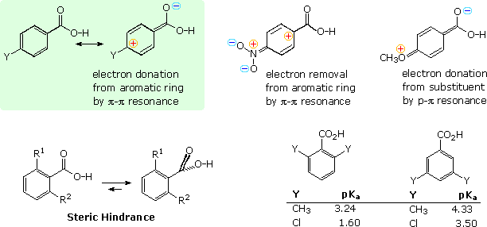
The increased acidity of ortho-substituted benzoic acids is attributed to steric hindrance that forces the carboxyl group to twist out of the plane of the benzene ring. The inductive character of the phenyl group does not change with such twisting, but resonance ( conjugative electron donation ) requires a coplanar relationship. For example, ortho-toluic acid ( R1 = CH3 & R2 = H ) has a pKa of 3.9 compared with 4.2 for benzoic acid itself. If the methyl is changed to a larger tert-butyl group the pKa drops to 3. 53. By sandwiching the carboxyl group between two ortho substituents, it is forced to lie perpendicular to the plane of the aromatic ring, and conjugation is prohibited completely. The dimethyl and dichlorobenzoic acid isomers shown at the lower right in the diagram provide dramatic evidence of this conformational effect, with the bis-ortho (2,6-) isomers representing the exclusive action of the inductive effect. Steric interference with conjugation may also perturb the acidity of acyclic unsaturated acids. Thus, 2,3-dimethyl-2-butenoic acid has a pKa of 4.41, compared with the 5.12 pKa of 3-methyl-2-butenoic acid.
The presence of a hydrogen bond donor near a carboxyl group may act to enhance its acidity, as demonstrated by the three isomeric hydroxybenzoic acids and three isomeric benzenedicarboxylic acids (phthalic acids) shown in the following table. Compared with benzoic acid, the meta and para-isomers display expected changes in acidity, due to combined inductive and resonance effects. However, the ortho isomers are both roughly 15 times more acidic, even though the hydroxyl and carboxyl substituents have opposite influences in the para-location.
Intramolecular hydrogen bonding of an ortho OH donor to the carbonyl oxygen of the carboxyl group, acting as an acceptor, increases the positive charge on the carbonyl carbon and consequently the acidity of the carboxyl OH. This is illustrated for salicylic acid in the following diagram. Phthalic acid engages in a similar seven-membered cyclic hydrogen bond with a similar outcome. This intramolecular hydrogen bonding also explains the decreased acidity of the remaining acidic function - that is the phenolic OH in salicylic acid and the second carboxyl group in phthalic acid.
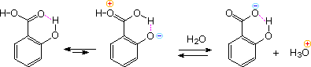
The stereoisomeric 2-butenedioic acids, maleic and fumaric acid display a similar behavior. The cis isomer, maleic acid, has pKa1 = 2.00 and pKa2 = 6.50. This contrasts with the values for the trans-isomer, fumaric acid, pKa1 = 3.00 and pKa2 = 4.50.